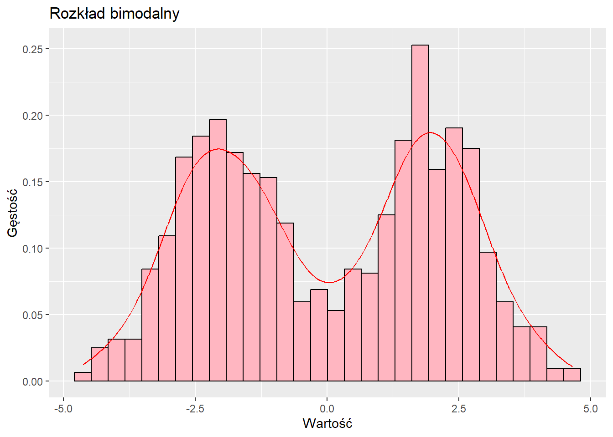
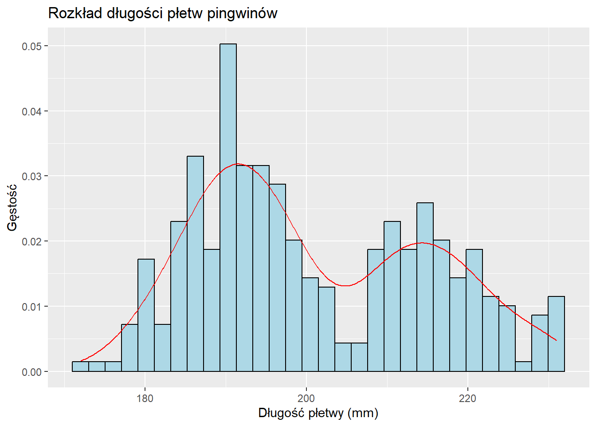
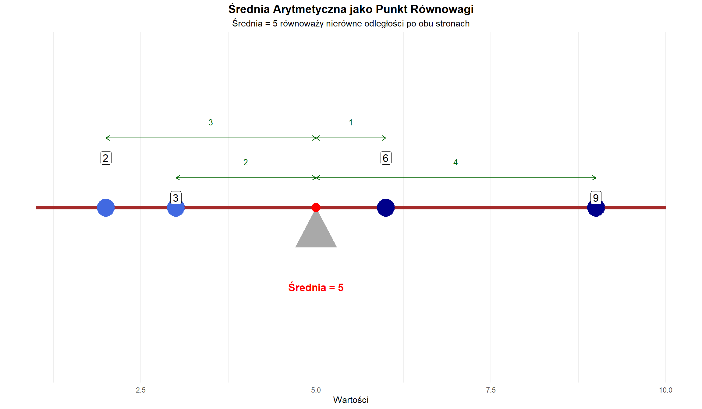

Statystyka opisowa jednej zmiennej (univariate descriptive statistics) pomaga nam podsumować i zrozumieć cechy pojedynczej zmiennej. Gdy zbieramy dane, często mamy wiele obserwacji, które są trudne do interpretacji bez jakiejś formy podsumowania. Statystyka opisowa pozwala nam:
Zidentyfikować “typową†lub “centralną†wartość w naszych danych
Zrozumieć, jak bardzo rozproszone lub zróżnicowane są dane
Wykryć nietypowe obserwacje (outliers)
Skutecznie komunikować wyniki innym
W tym rozdziale zbadamy fundamentalne narzędzia do opisywania danych numerycznych, zaczynając od podstawowej notacji i przechodząc przez miary tendencji centralnej, rozproszenia oraz techniki wizualizacji.
6.2 Przegląd: cztery typy miar opisowych
Statystykę opisową jednej zmiennej można podzielić na cztery główne kategorie, z których każda odpowiada na inne pytanie dotyczące naszych danych:
1. Miary tendencji centralnej (Measures of Central Tendency)
Pytanie: Jaka jest “typowa†lub “przeciętna†wartość?
Powszechne miary:
Średnia (mean) - średnia arytmetyczna
Mediana (median) - wartość środkowa
Moda (mode) - wartość najczęstsza
Cel: Te miary pomagają nam zidentyfikować, gdzie znajduje się “centrum†danych. Dostarczają pojedynczej wartości reprezentującej cały zbiór danych.
2. Miary zmienności (rozproszenia) (Measures of Variability/Dispersion)
Pytanie: Jak bardzo rozproszone są dane? Jak bardzo obserwacje różnią się od siebie?
Powszechne miary:
Rozstęp (range) - różnica między maksimum a minimum
Wariancja (variance) - średnie kwadratowe odchylenie od średniej
Odchylenie standardowe (standard deviation) - pierwiastek kwadratowy z wariancji
Cel: Te miary informują nas, czy obserwacje skupiają się blisko centrum, czy są szeroko rozproszone. Dwa zbiory danych mogą mieć tę samą średnią, ale bardzo różną zmienność.
3. Miary pozycji względnej (Measures of Relative Position/Standing)
Pytanie: Gdzie dana obserwacja znajduje się względem innych? Jaka proporcja danych znajduje się poniżej danej wartości?
Powszechne miary:
Kwantyle (quantiles) - pojęcie ogólne
Percentyle (percentiles) - dzielą dane na 100 części
Kwartyle (quartiles) - dzielą dane na 4 części
Wyniki znormalizowane (standardized scores, z-scores)
Cel: Te miary pomagają nam zrozumieć pozycję poszczególnych obserwacji w całym rozkładzie. Odpowiadają na pytania typu “Jak wynik tego studenta wypada w porównaniu z innymi?”
4. Miary kształtu rozkładu (Measures of Shape)
Pytanie: Jaka jest ogólna forma lub wzorzec rozkładu?
Powszechne miary:
Skośność (skewness) - asymetria, czy jest długi ogon po jednej stronie?
Kurtoza (kurtosis) - “ciężkość†ogonów, czy jest wiele wartości ekstremalnych?
Modalność (modality) - liczba szczytów (jednomodalny, dwumodalny, wielomodalny)
Cel: Te miary opisują ogólny wzorzec rozkładu. Choć nie będziemy ich obliczać numerycznie w tym kursie, będziemy identyfikować cechy kształtu wizualnie, używając histogramów i wykresów pudełkowych.
Związek między kategoriami:
Te cztery typy miar uzupełniają się wzajemnie. Kompletny opis danych jednej zmiennej zazwyczaj obejmuje:
Co najmniej jedną miarę tendencji centralnej (średnią lub medianę)
Co najmniej jedną miarę zmienności (odchylenie standardowe lub IQR)
Informacje o pozycji względnej przy porównywaniu konkretnych obserwacji
W kolejnych sekcjach zbadamy każdą z tych kategorii szczegółowo, zaczynając od notacji matematycznej potrzebnej do precyzyjnego wyrażania tych pojęć.
6.3 Skale pomiarowe i odpowiednie statystyki
Zanim zagłębimy się w konkretne miary statystyczne, ważne jest zrozumienie, że nie wszystkie statystyki są odpowiednie dla wszystkich typów danych. Typ skali pomiarowej określa, które miary statystyczne możemy sensownie stosować.
Cztery skale pomiarowe
1. Skala nominalna (Nominal Scale)
Kategorie bez inherentnej kolejności (np. płeć, kraj, przynależność partyjna, kolor oczu).
Właściwości: Kategorie są różne, ale nie możemy powiedzieć, że jedna jest “większa†od drugiej.
2. Skala porządkowa (Ordinal Scale)
Kategorie z sensowną kolejnością, ale odstępy między kategoriami niekoniecznie są równe (np. poziom wykształcenia: podstawowe/średnie/licencjat/magisterium/doktorat; odpowiedzi w ankiecie: zdecydowanie się nie zgadzam/nie zgadzam/neutralny/zgadzam się/zdecydowanie się zgadzam).
Właściwości: Możemy uszeregować obserwacje, ale nie możemy skwantyfikować różnicy między rangami.
3. Skala interwałowa (Interval Scale)
Skala numeryczna z równymi odstępami, ale bez prawdziwego zera (np. temperatura w Celsjuszu lub Fahrenheita, lata kalendarzowe).
Właściwości: Różnice są znaczące (20°C do 30°C to taka sama zmiana jak 30°C do 40°C), ale stosunki nie (20°C nie jest “dwa razy cieplejsze†niż 10°C).
4. Skala ilorazowa (Ratio Scale)
Skala numeryczna z równymi odstępami I prawdziwym zerem (np. wzrost, waga, dochód, wiek, dystans).
Właściwości: Zarówno różnice, jak i stosunki są znaczące (20 kg jest dwa razy cięższe niż 10 kg).
Które statystyki dla których skal?
Miara
Nominalna
Porządkowa
Interwałowa
Ilorazowa
Moda
✓
✓
✓
✓
Mediana
✗
✓
✓
✓
Średnia
✗
✗
✓
✓
Rozstęp
✗
✗
✓
✓
Wariancja/Odch. stand.
✗
✗
✓
✓
IQR
✗
✓
✓
✓
Kwantyle/Percentyle
✗
✓
✓
✓
Kluczowe spostrzeżenia:
Dane nominalne: Tylko moda ma sens. Możemy liczyć częstości, ale nie możemy obliczać średnich czy median.
Dane porządkowe: Mediana i IQR są odpowiednie, ponieważ wymagają tylko uporządkowania. Średnia nie jest odpowiednia, bo zakłada równe odstępy.
Dane interwałowe/ilorazowe: Wszystkie miary są odpowiednie. To najbardziej elastyczne skale pomiarowe.
Przykład ilustrujący, dlaczego skala ma znaczenie:
Moda: Poprawna - “Większość respondentów ma licencjat”
Mediana: Poprawna - “Mediana poziomu wykształcenia to licencjat”
Średnia: Problematyczna - “Średni poziom wykształcenia to 3,2†jest trudna do interpretacji, ponieważ odstępy między poziomami nie są równe (różnica między podstawowym a średnim nie jest taka sama jak różnica między magisterium a doktoratem)
W tym rozdziale skupimy się głównie na danych interwałowych i ilorazowych, gdzie wszystkie miary statystyczne są odpowiednie. Należy jednak pamiętać o tych rozróżnieniach podczas pracy z różnymi typami danych w praktyce.
6.4 Notacja sigma
Zanim zagłębimy się w miary statystyczne, musimy zrozumieć notację sigma (sigma notation), która dostarcza zwartego sposobu wyrażania sumy wielu wartości.
Grecka litera \Sigma (duża sigma) oznacza “suma”. Gdy piszemy:
\sum_{i=1}^{n} x_i
Oznacza to: “Zsumuj wszystkie wartości x od pierwszej obserwacji (i=1) do ostatniej obserwacji (i=n).”
Rozbicie notacji:
\Sigma = operator sumowania (“zsumuj to”)
i=1 (poniżej \Sigma) = zacznij od pierwszej obserwacji
n (powyżej \Sigma) = kontynuuj do n-tej obserwacji
\sum_{i=1}^{n} c \cdot x_i = c \sum_{i=1}^{n} x_i \text{ (gdzie } c \text{ jest stałą)}
6.5 Rozkład danych i rozkład częstości
Czym jest rozkład danych?
Rozkład danych (data distribution) odnosi się do tego, jak wartości w zbiorze danych rozkładają się w możliwym zakresie wartości. Zrozumienie rozkładu pomaga nam zobaczyć wzorce, zidentyfikować typowe wartości i wykryć nietypowe obserwacje.
Gdy mówimy o rozkładzie, pytamy: “Jakie wartości występują w naszych danych i jak często pojawia się każda wartość (lub zakres wartości)?”
Rozkład częstości
Rozkład częstości (frequency distribution) organizuje dane, pokazując, ile razy występuje każda wartość (lub zakres wartości). Może być przedstawiony jako:
Tabela pokazująca wartości i ich liczności
Rozkład częstości względnych (pokazujący proporcje lub procenty)
Częstość: Liczba studentów, którzy przeczytali daną liczbę książek
Częstość względna: Proporcja wszystkich studentów (np. 0,20 = 20% przeczytało 5 książek)
Częstość skumulowana: Suma narastająca (np. 10 studentów przeczytało 5 lub mniej książek)
6.6 Miary tendencji centralnej
Miary tendencji centralnej informują nas o “typowej†lub “centralnej†wartości w zbiorze danych. Trzy najpowszechniejsze miary to średnia, mediana i moda.
Prostym językiem: Średnia to wartość, którą otrzymalibyśmy, gdybyśmy mogli redystrybuować wszystkie wartości równo między wszystkie obserwacje. Jeśli pięciu studentów uzyskało łącznie 430 punktów, każdy otrzymałby 86 punktów, gdybyśmy podzielili sumę równo.
Średnia jako punkt równowagi
Jednym z najważniejszych sposobów pojęciowego zrozumienia średniej jest traktowanie jej jako punktu równowagi (balancing point) lub środka ciężkości (center of gravity) danych.
Wyobraźmy sobie umieszczenie ciężarków na huśtawce w pozycjach odpowiadających naszym wartościom danych. Średnia to punkt, w którym huśtawka byłaby idealnie wyważona.
Matematyczny wgląd:
Suma odchyleń od średniej zawsze równa się zeru:
\sum_{i=1}^{n} (x_i - \bar{x}) = 0
Oznacza to, że odchylenia dodatnie (wartości powyżej średniej) dokładnie znoszą odchylenia ujemne (wartości poniżej średniej).
Wizualizacja:
# Przykładowe danedata_points <-c(2, 4, 5, 8, 11)mean_val <-mean(data_points)# Ustaw obszar wykresupar(mar =c(4, 2, 3, 2))plot(c(0, 13), c(0, 2.5), type ="n", xlab ="Wartość", ylab ="",main ="Średnia jako punkt równowagi", yaxt ="n", bty ="n")# Narysuj huśtawkę (punkt podparcia na średniej)segments(0, 1, 13, 1, lwd =4, col ="brown")polygon(c(mean_val -0.3, mean_val +0.3, mean_val), c(0.7, 0.7, 0.3), col ="gray30", border ="black", lwd =2)# Zaznacz punkty danych jako ciężarki na huśtawcepoints(data_points, rep(1, length(data_points)), pch =19, cex =3, col ="darkblue")# Dodaj linie pionowe pokazujące odległości od średniejfor(i in1:length(data_points)) {segments(data_points[i], 1, mean_val, 1, lty =2, col ="red", lwd =1.5)}# Zaznacz średniąpoints(mean_val, 1, pch =17, cex =4, col ="red")text(mean_val, 0.4, paste("Średnia =", round(mean_val, 1)), col ="red", cex =1.5, font =2)# Dodaj etykiety wartościtext(data_points, rep(1.4, length(data_points)), as.character(data_points), cex =1.2, font =2)# Uproszczone podsumowanie poniżejdeviations <- data_points - mean_valtext(6.5, 2.2, sprintf("Suma odchyleń od średniej = %.1f", sum(deviations)),cex =1.1)
Interpretacja: Średnia (6) działa jako punkt podparcia. Punkt danych na 2 jest 4 jednostki poniżej średniej, podczas gdy punkt na 11 jest 5 jednostek powyżej. Odchylenia ujemne i dodatnie się równoważą, czyniąc średnią idealnym punktem równowagi.
Dlaczego to ma znaczenie: Ta właściwość wyjaśnia, dlaczego średnia jest wrażliwa na wartości ekstremalne (outliers). Pojedyncza bardzo duża lub bardzo mała wartość może “pociągnąć†średnią w swoim kierunku, tak jak ciężki ciężarek daleko od punktu podparcia przechyliłby huśtawkę.
Mediana
Mediana (median) to wartość środkowa, gdy dane są uporządkowane. Dzieli zbiór danych na dwie równe połowy: 50% obserwacji znajduje się poniżej mediany, a 50% powyżej niej.
Stosowna dla: Danych porządkowych, interwałowych i ilorazowych (wymaga uporządkowania)
Jak znaleźć medianę:
Uporządkuj dane od najmniejszej do największej
Jeśli n jest nieparzyste: mediana to wartość środkowa na pozycji \frac{n+1}{2}
Jeśli n jest parzyste: mediana to średnia z dwóch wartości środkowych na pozycjach \frac{n}{2} i \frac{n}{2} + 1
Dwie wartości środkowe są na pozycjach 3 i 4: 8 i 12
\text{Mediana} = \frac{8 + 12}{2} = 10
Prostym językiem: Mediana to wartość, która znajduje się pośrodku, gdy ustawimy wszystkie obserwacje od najmniejszej do największej. Połowa obserwacji jest mniejsza od mediany, a połowa większa.
Kluczowa zaleta: Mediana jest odporna na wartości odstające (resistant to outliers). Wartości ekstremalne nie wpływają na nią znacząco, co czyni ją użyteczną, gdy dane zawierają wartości odstające.
Moda
Moda (mode) to wartość, która pojawia się najczęściej w zbiorze danych.
Stosowna dla: Danych nominalnych, porządkowych, interwałowych i ilorazowych (wszystkie skale)
Właściwości:
Zbiór danych może nie mieć mody (wszystkie wartości występują równie często)
Zbiór danych może mieć jedną modę (jednomodalny)
Zbiór danych może mieć wiele mod (dwumodalny, wielomodalny)
Prostym językiem: Moda informuje nas, która wartość jest najczęstsza lub najbardziej typowa w zbiorze danych. Jest szczególnie użyteczna dla danych kategorycznych (np. “niebieski†to najczęstszy kolor oczu w próbie).
Porównanie średniej, mediany i mody
# Generuj czystsze, bardziej regularne rozkładyset.seed(42)# Skośny w lewo: rozkład betaleft_skew <-rbeta(2000, 8, 2) *50+30# Symetryczny: rozkład normalnysymmetric <-rnorm(2000, 55, 8)# Skośny w prawo: rozkład betaright_skew <-rbeta(2000, 2, 8) *50+30par(mfrow =c(1, 3), mar =c(4, 4, 3, 1))# Skośny w lewohist(left_skew, main ="Rozkład skośny w lewo", xlab ="Wartość", col ="lightblue", breaks =25, xlim =c(25, 85), ylim =c(0, 350))abline(v =mean(left_skew), col ="red", lwd =3, lty =1)abline(v =median(left_skew), col ="blue", lwd =3, lty =2)legend("topleft", legend =c("Średnia", "Mediana"), col =c("red", "blue"), lty =c(1, 2), lwd =3, cex =1.1)text(mean(left_skew) -3, 320, sprintf("%.1f", mean(left_skew)), col ="red", cex =1.2, font =2)text(median(left_skew) +3, 320, sprintf("%.1f", median(left_skew)), col ="blue", cex =1.2, font =2)# Symetrycznyhist(symmetric, main ="Rozkład symetryczny", xlab ="Wartość", col ="lightgreen", breaks =25,xlim =c(25, 85), ylim =c(0, 350))abline(v =mean(symmetric), col ="red", lwd =3, lty =1)abline(v =median(symmetric), col ="blue", lwd =3, lty =2)text(mean(symmetric), 320, sprintf("%.1f", mean(symmetric)), col ="red", cex =1.2, font =2, pos =3)text(median(symmetric), 300, sprintf("%.1f", median(symmetric)), col ="blue", cex =1.2, font =2, pos =3)# Skośny w prawohist(right_skew, main ="Rozkład skośny w prawo", xlab ="Wartość", col ="lightyellow", breaks =25,xlim =c(25, 85), ylim =c(0, 350))abline(v =mean(right_skew), col ="red", lwd =3, lty =1)abline(v =median(right_skew), col ="blue", lwd =3, lty =2)text(mean(right_skew) +3, 320, sprintf("%.1f", mean(right_skew)), col ="red", cex =1.2, font =2)text(median(right_skew) -3, 320, sprintf("%.1f", median(right_skew)), col ="blue", cex =1.2, font =2)

Kluczowe spostrzeżenia:
W rozkładach symetrycznych średnia ≈ mediana ≈ moda
W rozkładach skośnych w prawo (długi ogon po prawej stronie) średnia > mediana
W rozkładach skośnych w lewo (długi ogon po lewej stronie) średnia < mediana
Średnia jest ciągnięta w kierunku ogona, podczas gdy mediana pozostaje w środku głównej masy danych.
6.7 Miary Zmienności (Rozproszenia) / Measures of Dispersion (Variability)
Podczas gdy miary tendencji centralnej (measures of central tendency) informują nas o typowych wartościach, miary zmienności (measures of dispersion/variability) pokazują, jak bardzo dane są rozproszone. Dwa zbiory danych mogą mieć tę samą średnią, ale bardzo różne rozproszenie.
Prostym językiem: Rozstęp mówi nam o zakresie od najmniejszej do największej obserwacji. Daje szybkie wyobrażenie o rozproszeniu, ale jest bardzo wrażliwy na wartości odstające (outliers) (ponieważ wykorzystuje tylko dwie wartości).
Wizualizacja Zmienności: Przykład Roboczy
Aby zrozumieć wariancję i odchylenie standardowe, przeanalizujmy kompletny przykład z danymi X = (2, 2, 3, 4, 5, 5). Potraktujemy je jako sekwencyjne obserwacje (jak pomiary w czasie), aby zwizualizować, jak poszczególne wartości odstają od swojej średniej.
X <-c(2, 2, 3, 4, 5, 5)mean_X <-mean(X)plot(X, type ="b", pch =19, col ="darkblue", xlab ="Obserwacja", ylab ="Wartość",main ="Odchylenia od średniej",ylim =c(0, 6))abline(h = mean_X, col ="red", lwd =2, lty =2)text(1, mean_X +0.3, paste("Średnia =", mean_X), col ="red", pos =4)# Dodaj linie odchyleńfor(i in1:length(X)) {segments(i, mean_X, i, X[i], col ="gray", lty =3)}

Szare przerywane linie pokazują odchylenia (deviations) od średniej (mean). Wariancja będzie mierzyć średnią kwadratową długość tych odchyleń.
Dlaczego Podnosimy Odchylenia do Kwadratu?
To jedno z najważniejszych pytań koncepcyjnych w statystyce. Dlaczego nie uśrednić po prostu odchyleń (x_i - \bar{x}) bezpośrednio?
Problem: Gdybyśmy po prostu uśrednili odchylenia, zawsze sumowałyby się do zera (jak widzieliśmy przy właściwości punktu równowagi). Zweryfikujmy to na naszym przykładzie:
Dlaczego podnoszenie do kwadratu jest preferowane:
Wygoda matematyczna: Podnoszenie do kwadratu ma lepsze właściwości matematyczne dla teorii statystycznej
Uwypuklenie większych odchyleń: Podnoszenie do kwadratu daje większą wagę ekstremalnym odchyleniom (punkt odległy o 10 jednostek wnosi 100 do wariancji, podczas gdy punkt odległy o 5 jednostek wnosi tylko 25)
Związek z ważnymi rozkładami: Forma kwadratowa pojawia się naturalnie w wielu rozkładach i testach statystycznych
Dekompozytowalność: Wariancję można dzielić i rozkładać w użyteczny sposób
Problem jednostek: Ponieważ podnieśliśmy odchylenia do kwadratu, wariancja jest w jednostkach kwadratowych (squared units). Jeśli nasze dane są w centymetrach, wariancja jest w centymetrach kwadratowych. Dlatego często preferujemy odchylenie standardowe.
Wariancja / Variance
Wariancja (variance) mierzy średnie kwadratowe odchylenie od średniej. Określa, jak daleko średnio każda obserwacja jest od średniej.
Stosuje się do: Danych przedziałowych i ilorazowych
Obliczenia Ręczne: Wariancja Populacji vs. Próby
Kontynuujmy nasz przykład X = (2, 2, 3, 4, 5, 5) i obliczmy odchylenia kwadratowe (squared deviations):
x_i
x_i - \bar{x}
(x_i - \bar{x})^2
2
-1.5
2.25
2
-1.5
2.25
3
-0.5
0.25
4
0.5
0.25
5
1.5
2.25
5
1.5
2.25
Suma
9.5
Wariancja populacji (population variance) (gdyby to była cała populacja):
Problem: Gdy używamy danych z próby do oszacowania wariancji populacji, formuła \frac{\sum(x_i - \bar{x})^2}{n} ma tendencję do niedoszacowania (underestimate) prawdziwej wariancji populacji. Dzieje się tak, ponieważ \bar{x} jest obliczana z tych samych danych, co sprawia, że odchylenia są sztucznie mniejsze (mierzymy odchylenia od średniej próby, a nie od prawdziwej średniej populacji).
Rozwiązanie: Korekta Bessela (Bessel’s correction) dostosowuje to obciążenie (bias), dzieląc przez n-1 zamiast n. To daje nieobciążony estymator (unbiased estimator) wariancji populacji.
# Wariancja próby (z korektą Bessela)var_sample <-var(X) # R domyślnie używa korekty Besselacat("Wariancja próby:", var_sample, "\n")
Wariancja próby: 1.9
Kluczowa różnica: Wariancja próby (1.9) jest większa niż wariancja populacji (1.583), zapewniając nieobciążony estymator przy pracy z danymi z próby.
Prostym językiem: Wariancja to średnia z kwadratów odchyleń od średniej. Większa wariancja oznacza bardziej rozproszone dane; mniejsza wariancja oznacza, że dane skupiają się bardziej wokół średniej.
Kolejny Przykład
Dane: 2, 4, 6, 8, 10
Średnia: \bar{x} = \frac{2+4+6+8+10}{5} = 6
x_i
x_i - \bar{x}
(x_i - \bar{x})^2
2
-4
16
4
-2
4
6
0
0
8
2
4
10
4
16
Suma
40
s^2 = \frac{40}{5-1} = \frac{40}{4} = 10
Odchylenie Standardowe / Standard Deviation
Odchylenie standardowe (standard deviation) to po prostu pierwiastek kwadratowy z wariancji. Przywraca nas do oryginalnych jednostek pomiaru.
Stosuje się do: Danych przedziałowych i ilorazowych
s = \sqrt{s^2} = \sqrt{\frac{1}{n-1}\sum_{i=1}^{n}(x_i - \bar{x})^2}
Prostym językiem: Odchylenie standardowe mówi nam o typowej odległości obserwacji od średniej, w oryginalnych jednostkach pomiaru. Jest bardziej interpretowalnie niż wariancja, ponieważ jest w tych samych jednostkach co dane.
Przybliżona interpretacja: W wielu rozkładach (szczególnie symetrycznych, w kształcie dzwonu), około 68% obserwacji mieści się w obrębie jednego odchylenia standardowego od średniej, a około 95% mieści się w obrębie dwóch odchyleń standardowych.
Stosowny dla: Danych porządkowych, interwałowych i ilorazowych (wymaga uporządkowania)
\text{IQR} = Q_3 - Q_1
gdzie Q_1 to pierwszy kwartyl (25. percentyl), a Q_3 to trzeci kwartyl (75. percentyl).
Prostym językiem: IQR informuje nas o zakresie, który zawiera środkową połowę naszych danych. Jest odporny na wartości odstające, co czyni go użytecznym, gdy obecne są wartości ekstremalne.
Przykład:
Dane: 2, 4, 5, 7, 8, 11, 12, 15, 18, 20
Q_1 = 5 (25% danych znajduje się poniżej 5)
Q_3 = 15 (75% danych znajduje się poniżej 15)
\text{IQR} = 15 - 5 = 10
Środkowe 50% obserwacji rozciąga się na 10 jednostek.
6.8 Miary pozycji względnej
Miary pozycji względnej pomagają nam zrozumieć, gdzie dana obserwacja znajduje się w całym rozkładzie. Te miary odpowiadają na pytania typu “Jak ta wartość wypada w porównaniu z innymi w zbiorze danych?”
Kwantyl (quantile) to wartość, która dzieli zbiór danych na grupy równej wielkości. Bardziej formalnie, p-ty kwantyl to wartość, poniżej której znajduje się proporcja p danych.
Stosowny dla: Danych porządkowych, interwałowych i ilorazowych
Definicja:
Dla proporcji p (gdzie 0 < p < 1), p-ty kwantyl q_p spełnia:
Co najmniej proporcja p obserwacji jest mniejsza lub równa q_p
Co najmniej proporcja (1-p) obserwacji jest większa lub równa q_p
Prostym językiem: Kwantyle to “punkty odcięcia”, które dzielą nasze uporządkowane dane na segmenty. Informują nas o wartości, poniżej której znajduje się określona proporcja naszych danych.
Ważna uwaga: Kwantyle to pojęcie ogólne. Percentyle, kwartyle i mediana to wszystko konkretne typy kwantyli.
Przykłady kwantyli:
0,5 kwantyl (50. percentyl) to mediana - połowa danych znajduje się poniżej niej
0,25 kwantyl (25. percentyl) to pierwszy kwartyl (Q_1)
0,75 kwantyl (75. percentyl) to trzeci kwartyl (Q_3)
0,90 kwantyl (90. percentyl) oznacza, że 90% danych znajduje się poniżej tej wartości
Percentyle
Percentyl (percentile) to konkretny typ kwantyla, który dzieli dane na 100 równych części. k-ty percentyl to wartość, poniżej której znajduje się k procent obserwacji.
Stosowny dla: Danych porządkowych, interwałowych i ilorazowych
Związek z kwantylami:
k-ty percentyl odpowiada \frac{k}{100} kwantylowi. Na przykład:
percentyl = 0,25 kwantyl
percentyl = 0,50 kwantyl = mediana
percentyl = 0,90 kwantyl
Przykłady:
50. percentyl to mediana (50% danych znajduje się poniżej niej)
90. percentyl oznacza, że 90% obserwacji znajduje się poniżej tej wartości
10. percentyl oznacza, że tylko 10% obserwacji znajduje się poniżej tej wartości
Interpretacja: Jeśli zdobyłeś 85. percentyl w teście, poradziłeś sobie lepiej niż 85% zdających.
Kwartyle
Kwartyle (quartiles) to konkretne kwantyle, które dzielą dane na cztery równe części. Są to 25., 50. i 75. percentyle:
Stosowne dla: Danych porządkowych, interwałowych i ilorazowych
Q_1 (Pierwszy kwartyl lub 25. percentyl): 25% danych znajduje się poniżej tej wartości
Q_2 (Drugi kwartyl lub 50. percentyl): Mediana - 50% znajduje się poniżej
Q_3 (Trzeci kwartyl lub 75. percentyl): 75% danych znajduje się poniżej tej wartości
# Wizualizacja kwartyliset.seed(456)example_data <-sort(rnorm(100, 50, 10))par(mar =c(5, 4, 4, 2))plot(1:100, example_data, pch =19, cex =0.8, col ="gray40",xlab ="Obserwacja (uporządkowana)", ylab ="Wartość",main ="Kwartyle dzielą dane na cztery równe części")# Dodaj linie kwartyliabline(h =quantile(example_data, 0.25), col ="blue", lwd =2, lty =2)abline(h =quantile(example_data, 0.50), col ="red", lwd =2, lty =1)abline(h =quantile(example_data, 0.75), col ="blue", lwd =2, lty =2)# Dodaj zacienione regionyrect(0, min(example_data), 101, quantile(example_data, 0.25), col =rgb(0, 0, 1, 0.1), border =NA)rect(0, quantile(example_data, 0.25), 101, quantile(example_data, 0.50), col =rgb(0, 1, 0, 0.1), border =NA)rect(0, quantile(example_data, 0.50), 101, quantile(example_data, 0.75), col =rgb(1, 1, 0, 0.1), border =NA)rect(0, quantile(example_data, 0.75), 101, max(example_data), col =rgb(1, 0, 0, 0.1), border =NA)# Etykietytext(95, quantile(example_data, 0.25), "Q1 (25%)", pos =3, font =2)text(95, quantile(example_data, 0.50), "Q2 (50%)", pos =3, font =2)text(95, quantile(example_data, 0.75), "Q3 (75%)", pos =3, font =2)legend("topleft", legend =c("Każdy region zawiera 25% obserwacji"),bty ="n", cex =1.1)

Obliczanie kwartyli: metoda Tukeya
Istnieje kilka metod obliczania kwartyli. W tym kursie używamy metody Tukeya (Tukey method, zwanej również metodą zawiasów, hinges method):
Uwaga: Funkcja R quantile() ma wiele metod. Metoda Tukeya odpowiada type = 2, podczas gdy domyślną w R jest type = 7.
6.9 Miary kształtu rozkładu
Miary kształtu opisują ogólną formę lub wzorzec rozkładu. Choć zazwyczaj oceniamy kształt wizualnie, używając histogramów i wykresów pudełkowych, ważne jest zrozumienie kluczowych koncepcji.
Skośność (asymetria)
Skośność (skewness) odnosi się do asymetrii rozkładu. Informuje nas, czy rozkład ma dłuższy ogon po jednej stronie.
Typy skośności:
Symetryczny (brak skośności): Rozkład wygląda tak samo po obu stronach centrum. Średnia ≈ Mediana.
Skośny w prawo (skośność dodatnia): Długi ogon rozciąga się w prawo. Średnia > Mediana. Większość wartości skupia się po lewej stronie, z kilkoma dużymi wartościami ciągnącymi ogon.
Skośny w lewo (skośność ujemna): Długi ogon rozciąga się w lewo. Średnia < Mediana. Większość wartości skupia się po prawej stronie, z kilkoma małymi wartościami ciągnącymi ogon.
Prostym językiem: Skośność informuje nas, w którym kierunku wskazuje “ogon”. Rozkłady dochodów są zazwyczaj skośne w prawo (większość ludzi zarabia umiarkowane dochody, ale nieliczni zarabiają ekstremalnie wysokie dochody). Wyniki testów z łatwego egzaminu mogą być skośne w lewo (większość studentów uzyskuje wysokie wyniki, ale nieliczni bardzo niskie).
Kurtoza (spiczastość)
Kurtoza (kurtosis) odnosi się do tego, czy rozkład ma ciężkie ogony (wiele wartości ekstremalnych) czy lekkie ogony (mało wartości ekstremalnych) w porównaniu z rozkładem normalnym.
Typy:
Wysoka kurtoza: Ciężkie ogony z wieloma wartościami odstającymi; ostry szczyt w centrum
Niska kurtoza: Lekkie ogony z nielicznymi wartościami odstającymi; bardziej płaski szczyt
Prostym językiem: Kurtoza informuje nas, czy wartości ekstremalne są powszechne, czy rzadkie w naszych danych. Zwroty finansowe często mają wysoką kurtozę - większość dni pokazuje małe zmiany, ale okazjonalnie zdarzają się bardzo duże ruchy (krachy rynkowe lub rajdy).
Modalność (liczba szczytów)
Modalność (modality) odnosi się do liczby wyraźnych szczytów lub “mod†w rozkładzie.
Typy:
Jednomodalny (unimodal): Jeden wyraźny szczyt
Dwumodalny (bimodal): Dwa wyraźne szczyty
Wielomodalny (multimodal): Trzy lub więcej szczytów
Jednostajny (uniform): Brak szczytów; wszystkie wartości mniej więcej równie powszechne
Prostym językiem: Liczba szczytów może ujawnić ważne cechy danych. Rozkład dwumodalny może wskazywać dwie odrębne podgrupy (np. wzrost dorosłych może pokazywać szczyty dla mężczyzn i kobiet).
# Wizualizuj różne kształtyset.seed(789)par(mfrow =c(1, 3), mar =c(4, 4, 3, 1))# Jednomodalny symetrycznysymmetric_data <-rnorm(1000, 50, 10)hist(symmetric_data, breaks =30, main ="Jednomodalny symetryczny", xlab ="Wartość", col ="lightblue", probability =TRUE)lines(density(symmetric_data), col ="darkblue", lwd =2)# Skośny w prawoskewed_data <-rexp(1000, 1/20) +20hist(skewed_data, breaks =30, main ="Skośny w prawo (jednomodalny)", xlab ="Wartość", col ="lightgreen", probability =TRUE)lines(density(skewed_data), col ="darkgreen", lwd =2)# Dwumodalnybimodal_data <-c(rnorm(500, 30, 5), rnorm(500, 60, 5))hist(bimodal_data, breaks =30, main ="Dwumodalny", xlab ="Wartość", col ="lightyellow", probability =TRUE)lines(density(bimodal_data), col ="orange", lwd =2)
Ocena wizualna: Cechy kształtu identyfikujemy głównie przez:
Histogramy: Pokazują ogólną formę, liczbę szczytów i kierunek skośności
Wykresy pudełkowe: Ujawniają skośność przez długość wąsów i pozycję mediany
Histogram wyświetla rozkład częstości (frequency distribution) danych liczbowych poprzez podzielenie zakresu na przedziały (bins) i pokazanie liczby lub proporcji obserwacji w każdym przedziale.
Konstrukcja Histogramu
Kluczowe decyzje:
Liczba przedziałów: Zbyt mało przedziałów traci szczegóły; zbyt wiele przedziałów tworzy szum
Granice przedziałów: Czy przedziały powinny być [a, b) (zamknięte z lewej, otwarte z prawej) czy (a, b] (otwarte z lewej, zamknięte z prawej)?
Skala osi Y: Częstości (frequency), częstości względne (relative frequency) czy gęstość (density)?
Wybór Optymalnej Liczby Przedziałów
Kilka reguł pomaga określić odpowiednią liczbę przedziałów:
1. Reguła Sturgesa (Sturges’ Rule) (domyślna w R):
k = \lceil \log_2(n) + 1 \rceil
gdzie n to liczebność próby. Działa dobrze dla rozkładów symetrycznych i jednomodalnych.
gdzie IQR to rozstęp międzykwartylowy (interquartile range). Najbardziej odporna na wartości odstające; zalecana dla rozkładów skośnych (skewed distributions).
Histogram częstości (frequency histogram) pokazuje liczbę obserwacji w każdym przedziale. Oś Y reprezentuje liczbę obserwacji.
Oś Y: Liczba bezwzględna (częstość)
Stosujemy gdy: Chcemy zobaczyć surowe liczby
Ograniczenie: Trudno porównywać rozkłady o różnych liczebnościach próby
2. Histogram Częstości Względnych / Relative Frequency Histogram
Histogram częstości względnych (relative frequency histogram) pokazuje proporcję obserwacji w każdym przedziale. Wysokość każdego słupka reprezentuje ułamek całości.
Oś Y: Częstość względna (proporcja) = \frac{\text{liczba w przedziale}}{n}
Stosujemy gdy: Porównujemy rozkłady o różnych liczebnościach próby
Właściwość: Wszystkie wysokości słupków sumują się do 1.0
3. Histogram Gęstości / Density Histogram
Histogram gęstości (density histogram) dostosowuje się do szerokości przedziałów tak, że pole powierzchni (nie wysokość) każdego słupka reprezentuje proporcję obserwacji.
Stosujemy gdy: Przedziały mają różne szerokości lub gdy łączymy z funkcjami gęstości prawdopodobieństwa
Właściwość: Całkowite pole powierzchni pod wszystkimi słupkami równa się 1.0
Kluczowa różnica: W histogramie gęstości pole powierzchni każdego słupka równa się częstości względnej, podczas gdy wysokość to gęstość.
Przedział (7, 9]: zawiera 8 (liczba = 1, ponieważ 9 nie ma w danych)
Konwencja R: Funkcja hist() w R domyślnie używa przedziałów prawostronnych zamkniętych (tj. (a, b]). Można to zmienić argumentem right = FALSE, aby uzyskać przedziały prawostronne otwarte [a, b).
par(mfrow =c(1, 2), mar =c(4, 4, 3, 2))# Prawostronne zamknięte (domyślne)hist(sample_data, breaks =20, main ="Przedziały Prawostronne Zamknięte (a, b]", xlab ="Wartość", col ="lightblue", border ="black", right =TRUE)# Prawostronne otwartehist(sample_data, breaks =20, main ="Przedziały Prawostronne Otwarte [a, b)", xlab ="Wartość", col ="lightcoral", border ="black", right =FALSE)
Wpływ Liczby Przedziałów
par(mfrow =c(1, 3), mar =c(4, 4, 3, 2))# Różne liczby przedziałówhist(sample_data, breaks =10, main ="10 Przedziałów (Za mało?)", xlab ="Wartość", col ="lightblue", border ="black")hist(sample_data, breaks =20, main ="20 Przedziałów (Zrównoważone)", xlab ="Wartość", col ="lightgreen", border ="black")hist(sample_data, breaks =40, main ="40 Przedziałów (Za dużo?)", xlab ="Wartość", col ="lightyellow", border ="black")
Interpretacja:
10 przedziałów: Pokazuje ogólny kształt, ale może przegapić szczegóły (potencjalna bimodalność nie jest widoczna)
20 przedziałów: Równoważy szczegóły i przejrzystość; ujawnia strukturę bimodalną (bimodal)
40 przedziałów: Pokazuje więcej szczegółów, ale może uwypuklać losowy szum, utrudniając dostrzeżenie wzorców
Wartości odstające: Niezwykłe wartości oddzielone od głównego zbioru
Luki: Zakresy, gdzie nie ma żadnych danych
Ogólna rekomendacja: Zacznij od reguły Sturgesa lub Freedmana-Diaconisa, a następnie dostosuj w zależności od tego, jakie wzorce chcesz uwypuklić. Dla analizy eksploracyjnej wypróbuj kilka różnych liczb przedziałów.
6.11 Wizualizacja: wykresy pudełkowe Tukeya
Wykres pudełkowy Tukeya (Tukey boxplot, lub box-and-whisker plot) dostarcza wizualnego podsumowania rozkładu opartego na pięciu kluczowych wartościach: minimum, Q_1, mediana, Q_3 i maksimum. Identyfikuje również wartości odstające.
Każda obserwacja poniżej płotu dolnego lub powyżej płotu górnego jest klasyfikowana jako wartość odstająca (outlier).
Krok 4: Narysuj wykres pudełkowy
Pudełko (box): Rozciąga się od Q_1 do Q_3 (zawiera środkowe 50% danych)
Linia wewnątrz pudełka: Pokazuje medianę
Wąsy (whiskers): Rozciągają się do najbardziej ekstremalnych obserwacji niebędących wartościami odstającymi
Pojedyncze punkty: Zaznaczone dla każdej wartości odstającej
KRYTYCZNE ROZRÓŻNIENIE: Płoty vs. Wąsy
Płoty (fences): Teoretyczne granice używane do identyfikacji wartości odstających (niekoniecznie rysowane)
Wąsy (whiskers): Rozciągają się do rzeczywistych punktów danych w obrębie płotów
Powszechny błąd: Studenci często myślą, że wąsy rozciągają się do płotów. To niepoprawne! Wąsy rozciągają się tylko do najbardziej ekstremalnych rzeczywistych wartości danych, które znajdują się w granicach płotów.
# Przykład demonstrujący płoty vs. wąsyexample_data <-c(5, 6, 7, 8, 9, 10, 11, 12, 13, 14, 15, 25)q1 <-quantile(example_data, 0.25, type =2)q3 <-quantile(example_data, 0.75, type =2)iqr <- q3 - q1lower_fence <- q1 -1.5* iqrupper_fence <- q3 +1.5* iqroutliers <- example_data[example_data < lower_fence | example_data > upper_fence]non_outliers <- example_data[example_data >= lower_fence & example_data <= upper_fence]lower_whisker <-min(non_outliers)upper_whisker <-max(non_outliers)par(mfrow =c(1, 2), mar =c(4, 3, 3, 2))# Lewy panel: Diagram pokazujący płoty i wąsyplot(c(0, 30), c(0, 2), type ="n", xlab ="Wartość", ylab ="", main ="Zrozumienie płotów vs. wąsów", yaxt ="n", bty ="n")# Punkty danychpoints(example_data, rep(1, length(example_data)), pch =19, cex =2, col =ifelse(example_data %in% outliers, "red", "darkblue"))# Płoty (przerywane)abline(v = lower_fence, col ="orange", lwd =2, lty =2)abline(v = upper_fence, col ="orange", lwd =2, lty =2)# Wąsy (ciągłe)abline(v = lower_whisker, col ="darkgreen", lwd =3)abline(v = upper_whisker, col ="darkgreen", lwd =3)# Pudełko (Q1 do Q3)rect(q1, 0.7, q3, 1.3, border ="black", lwd =2)segments(median(example_data), 0.7, median(example_data), 1.3, lwd =3)# Etykietytext(lower_fence, 1.7, sprintf("Płot dolny\n%.1f", lower_fence), col ="orange", cex =0.9)text(upper_fence, 1.7, sprintf("Płot górny\n%.1f", upper_fence), col ="orange", cex =0.9)text(lower_whisker, 0.3, sprintf("Wąs dolny\n%d", lower_whisker), col ="darkgreen", cex =0.9, font =2)text(upper_whisker, 0.3, sprintf("Wąs górny\n%d", upper_whisker), col ="darkgreen", cex =0.9, font =2)legend("top", legend =c("Obserwacje typowe", "Wartości odstające", "Płoty (przerywane)", "Wąsy (ciągłe)"),col =c("darkblue", "red", "orange", "darkgreen"),pch =c(19, 19, NA, NA), lty =c(NA, NA, 2, 1), lwd =2,ncol =2)# Prawy panel: Rzeczywisty wykres pudełkowyboxplot(example_data, main ="Odpowiadający wykres pudełkowy", ylab ="Wartość", col ="lightblue", ylim =c(0, 30))# Adnotuj komponenty wykresu pudełkowegotext(1.35, q1, "Q1", font =2)text(1.35, median(example_data), "Mediana", font =2)text(1.35, q3, "Q3", font =2)text(1.35, lower_whisker, "Wąs\ndolny", font =2, col ="darkgreen")text(1.35, upper_whisker, "Wąs\ngórny", font =2, col ="darkgreen")arrows(1.2, 25, 1.05, 25, length =0.1, col ="red", lwd =2)text(1.3, 25, "Wartość\nodstająca", pos =4, col ="red", font =2)
Kluczowe spostrzeżenia z wykresów pudełkowych:
Symetria: Jeśli mediana jest wycentrowana w pudełku, a wąsy mają równą długość, rozkład jest w przybliżeniu symetryczny
Skośność: Jeśli mediana jest bliżej Q_1, a górny wąs jest dłuższy, rozkład jest skośny w prawo
Wartości odstające: Pojedyncze punkty poza wąsami wskazują nietypowe obserwacje
Porównanie: Wykresy pudełkowe obok siebie ułatwiają porównywanie rozkładów między grupami
Porównywanie wielu grup wykresami pudełkowymi
# Generuj dane dla trzech grupset.seed(9)group_a <-rnorm(50, 50, 10)group_b <-c(rnorm(45, 60, 8), c(30, 35, 85, 90, 95)) # Z wartościami odstającymigroup_c <-rexp(50, 1/20) +30# Skośny w prawo# Połącz w ramkę danychdata_compare <-data.frame(value =c(group_a, group_b, group_c),group =factor(rep(c("Grupa A\n(Symetryczny)", "Grupa B\n(Z wartościami odstającymi)", "Grupa C\n(Skośny w prawo)"), each =50)))boxplot(value ~ group, data = data_compare,main ="Porównanie rozkładów między grupami",ylab ="Wartość",col =c("#66C2A5", "#FC8D62", "#8DA0CB"),border ="black")grid(nx =NA, ny =NULL, col ="lightgray", lty ="dotted")
Interpretacja:
Grupa A: Rozkład symetryczny z medianą blisko centrum pudełka
Grupa B: Wyższe centrum z kilkoma wartościami odstającymi po obu końcach
Grupa C: Rozkład skośny w prawo (dłuższy górny wąs, mediana bliżej Q_1)
6.12 Podsumowanie: wybór odpowiedniej miary
Wybór odpowiednich statystyk opisowych zależy od cech danych:
Dla tendencji centralnej:
Średnia: Stosuj, gdy dane są symetryczne i bez ekstremalnych wartości odstających. Dostarcza najwięcej informacji, ale wrażliwa na ekstrema. Wymaga skali interwałowej lub ilorazowej.
Mediana: Stosuj, gdy dane są skośne lub zawierają wartości odstające. Bardziej odporna, ale odrzuca część informacji. Wymaga co najmniej skali porządkowej.
Moda: Stosuj dla danych kategorycznych lub gdy identyfikujesz najczęstszą wartość. Można używać z każdą skalą pomiarową.
Dla rozproszenia:
Odchylenie standardowe: Stosuj ze średnią dla symetrycznych danych bez wartości odstających. Najczęstsza i interpretatywna. Wymaga skali interwałowej lub ilorazowej.
IQR: Stosuj z medianą dla skośnych danych lub danych z wartościami odstającymi. Odporny na ekstrema. Wymaga co najmniej skali porządkowej.
Rozstęp: Szybka ocena, ale bardzo wrażliwy na wartości odstające. Stosuj ostrożnie. Wymaga skali interwałowej lub ilorazowej.
Dla pozycji względnej:
Kwantyle/Percentyle: Pomagają porównać poszczególne obserwacje z całym rozkładem. Wymaga co najmniej skali porządkowej.
Kwartyle: Dostarczają standardowych punktów odcięcia dzielących dane na cztery równe części. Wymaga co najmniej skali porządkowej.
Dla kształtu:
Inspekcja wizualna: Używaj histogramów do oceny symetrii, skośności i modalności
Wykresy pudełkowe: Skutecznie ujawniają skośność i identyfikują wartości odstające
Dla wizualizacji:
Histogramy: Pokazują pełny kształt rozkładu. Dobre do zrozumienia ogólnych wzorców.
Wykresy pudełkowe: Efektywne podsumowania do porównywania grup. Wyraźnie podkreślają wartości odstające i kwartyle.
Ogólna zasada: Zawsze raportuj wiele miar. Średnia i odchylenie standardowe opowiadają jedną historię; mediana i IQR opowiadają inną. Razem z wizualizacjami dostarczają pełnego obrazu danych. Zawsze rozważ skalę pomiarową danych przy wyborze statystyk do obliczenia.
6.13 Appendix A: Understanding Mean as a Balance Point 🎯
Let’s consider a dataset X = \{1, 2, 6, 7, 9\} on a number line, imagining it as a seesaw:
The mean (\mu) acts as the perfect balance point of this seesaw. For our data:
\mu = \frac{1 + 2 + 6 + 7 + 9}{5} = 5
What happens at different support points? 🤔
Support point at 6 (too high):
Left side: Values (1, 2) are below
Right side: Values (7, 9) are above
\sum distances from left = (6-1) + (6-2) = 9
\sum distances from right = (7-6) + (9-6) = 4
The seesaw tilts left! ⬅️ because 9 > 4
Support point at 4 (too low):
Left side: Values (1, 2) are below
Right side: Values (6, 7, 9) are above
\sum distances from left = (4-1) + (4-2) = 5
\sum distances from right = (6-4) + (7-4) + (9-4) = 10
The seesaw tilts right! ➡️ because 5 < 10
Support point at mean (5) (perfect balance):
\sum distances below = \sum distances above
((5-1) + (5-2)) = ((6-5) + (7-5) + (9-5))
7 = 7 ✨ Perfect balance!
This shows why the mean is the unique balance point, where:
\sum_{i=1}^n (x_i - \mu) = 0
The seesaw will always tilt unless the support point is placed exactly at the mean! 🎪
Mean as a Balance Point
This visualization shows how the arithmetic mean (5) acts as a balance point between clustered points on the left and dispersed points on the right:
Left side of the mean: - Points with values 2 and 3 - Close together (difference of 1 unit) - Distances from mean: 3 and 2 units - Sum of “pull†= 5 units
Right side of the mean: - Points with values 6 and 9 - More spread out (difference of 3 units) - Distances from mean: 1 and 4 units - Sum of “pull†= 5 units
Key observations:
The mean (5) is a balance point, even though:
Points on the left are clustered (2,3)
Points on the right are dispersed (6,9)
Green arrows show distances from the mean
Balance is maintained because:
Sum of distances balances out: (5-2) + (5-3) = (6-5) + (9-5)
Total sum of distances = 5 units on each side
6.14 Appendix B: Measures of Relative Position (Standing)
Understanding where values sit within a dataset is crucial for data analysis. Let’s explore these concepts step by step.
Quartiles (Q): The Basics
Think of quartiles as special numbers that split your ordered data into four equal parts.
Doane, D. P., & Seward, L. W. (2016). Applied statistics in business and economics. Mcgraw-Hill.
What Are Quartiles?
First Quartile (Q1):
Separates the lowest 25% of data from the rest
Also called the 25th percentile
Example: If Q1 = 50 in a test score dataset, 25% of students scored below 50
Second Quartile (Q2):
The median - splits data in half
Also called the 50th percentile
Example: If Q2 = 70, half the students scored below 70
Third Quartile (Q3):
Separates the highest 25% of data from the rest
Also called the 75th percentile
Example: If Q3 = 85, 75% of students scored below 85
How to Calculate Quartiles (Step by Step) - Two Methods
Let’s examine student test scores using both common quartile calculation methods:
Example 1: Odd Number Case (11 scores)
60, 65, 70, 72, 75, 78, 80, 82, 85, 88, 90
Step 1: Find Q2 (median) - Same for both methods
With n = 11 values (odd)
Median position = (n + 1)/2 = 6
Q2 = 78
Step 2: Find Q1
Tukey’s Method:
Look at lower half: 60, 65, 70, 72, 75
Q1 = median of lower half = 70
Interpolation Method:
Position = (n + 1)/4 = (11 + 1)/4 = 3
Q1 = 70 (3rd value)
Step 3: Find Q3
Tukey’s Method:
Look at upper half: 80, 82, 85, 88, 90
Q3 = median of upper half = 85
Interpolation Method:
Position = 3(n + 1)/4 = 3(12)/4 = 9
Q3 = 85 (9th value)
Example 2: Even Number Case (10 scores)
60, 65, 70, 72, 75, 78, 80, 82, 85, 90
Step 1: Find Q2 (median) - Same for both methods
With n = 10 values (even)
Median positions = 5 and 6
Q2 = (75 + 78)/2 = 76.5
Step 2: Find Q1
Tukey’s Method:
Look at lower half: 60, 65, 70, 72, 75
Q1 = median of lower half = 70
Interpolation Method:
Position = (10 + 1)/4 = 2.75
Q1 = 65 + 0.75(70 - 65) = 68.75
Step 3: Find Q3
Tukey’s Method:
Look at upper half: 78, 80, 82, 85, 90
Q3 = median of upper half = 82
Interpolation Method:
Position = 3(10 + 1)/4 = 8.25
Q3 = 82 + 0.25(85 - 82) = 82.75
Important Notes:
Tukey’s Method:
First find the median (Q2)
Split the data into lower and upper halves
Find Q1 as the median of the lower half
Find Q3 as the median of the upper half
When n is odd, the median is not included in either half
Interpolation Method:
Uses positions (n+1)/4 for Q1 and 3(n+1)/4 for Q3
When position falls between values, uses linear interpolation
Doesn’t require splitting data into halves
Both methods give the same results for simple positions (Example 1) but can differ when interpolation is needed (Example 2).
6.15 Appendix C: Manual Construction of Tukey Boxplot
Step 1: Calculate Key Components
Find quartiles: Q_1, Q_2 (median), Q_3
Calculate Interquartile Range: IQR = Q_3 - Q_1
Step 2: Determine Whisker Boundaries
Lower fence: Q_1 - 1.5 \times IQR
Upper fence: Q_3 + 1.5 \times IQR
Step 3: Identify Outliers Data points are outliers if they are:
Warning: The `size` argument of `element_line()` is deprecated as of ggplot2 3.4.0.
ℹ Please use the `linewidth` argument instead.
ℹ The deprecated feature was likely used in the ggpubr package.
Please report the issue at <https://github.com/kassambara/ggpubr/issues>.
Warning: The `size` argument of `element_rect()` is deprecated as of ggplot2 3.4.0.
ℹ Please use the `linewidth` argument instead.
ℹ The deprecated feature was likely used in the ggpubr package.
Please report the issue at <https://github.com/kassambara/ggpubr/issues>.
Figure 6.1: Box plots comparing height distributions between groups.
To complement our box plots, let’s also look at the density distributions:
# Create density plotsggplot(data = data_height_l) +geom_density(aes(x = height, fill = Group_number), alpha =0.5) +facet_grid(~ Group_number) +scale_x_continuous(breaks =seq(130, 210, 10)) +labs(title ="Height Density by Group",x ="Height (cm)",y ="Density")
Figure 6.2: Density plots showing the height distributions for each group.
Box Plot Interpretation Exercise
Based on the box plots and density plots above, determine whether each of the following statements is True or False. For each statement, provide a brief explanation based on evidence from the visualizations.
Exercise Questions
Students from group 2 (G2) in the studied sample are, on average, taller than those from group 1 (G1).
Group 1 (G1) height measurements are more dispersed/spread out than group 2 (G2).
The lowest person is in group 2 (G2).
Both data sets are negatively (left) skewed.
Half of the students in group 2 (G2) measure at least 175 cm.
Hints for Interpretation
When answering these questions, consider:
The position of the median line within each box
The relative sizes of the boxes (IQR)
The positions of the minimum and maximum values
The symmetry of the distributions (balanced or skewed)
The lengths of the whiskers
For each statement, determine whether it is True or False and provide your explanation:
Answer Template
Students from G2 are, on average, taller than G1: [True/False]
Explanation:
G1 height is more dispersed/spread out: [True/False]
Explanation:
The lowest person is in G2: [True/False]
Explanation:
Both data sets are negatively (left) skewed: [True/False]
Explanation:
Half of G2 measure at least 175 cm: [True/False]
Explanation:
Let’s review the answers to our box plot interpretation questions:
Solutions
Students from G2 are, on average, taller than G1: False
Explanation: The median height (middle line in the boxplot) for G1 is higher than G2.
G1 height is more dispersed/spread out: False
Explanation: G2 shows greater dispersion. This is visible in the boxplot where G2 has a larger interquartile range (IQR) of 17.5 cm compared to G1’s 9.5 cm. G2 also has a wider range from minimum to maximum values.
The lowest person is in G2: True
Explanation: The minimum value in G2 is 138 cm, which is lower than the minimum value in G1 (150 cm).
Both data sets are negatively (left) skewed: True
Explanation: In both groups, the median line is positioned toward the upper part of the box, and the lower whisker is longer than the upper whisker. This indicates that there’s a longer tail on the left side of the distribution, which means negative skewness.
Half of G2 measure at least 175 cm: True
Explanation: The median (middle line in the boxplot) for G2 is 175 cm, which means that 50% of the values are greater than or equal to 175 cm.
R Code Reference
Here’s the complete R code used in this section:
# Load required packageslibrary(tidyr)library(ggplot2)library(ggpubr)# Set display optionsoptions(scipen =999, digits =3)# Create the datasetdata_height <-data.frame(group_1 =c(150, 160, 165, 168, 172, 173, 175, 176, 177, 178, 179, 180, 180, 181, 181, 182, 182, 183, 183, 184, 186, 188, 190, 191, 200),group_2 =c(138, 140, 148, 152, 164, 164, 165, 165, 166, 166, 170, 175, 175, 175, 182, 182, 182, 182, 182, 182, 183, 183, 183, 188, 210))# Transform dataset from wide to long formatdata_height_l <-gather(data = data_height, key ="Group_number", value ="height", group_1:group_2)# Display the first few rowshead(data_height_l)# Calculate summary statistics for each groupgroup1_stats <-summary(data_height$group_1)group2_stats <-summary(data_height$group_2)# Calculate IQRgroup1_iqr <-IQR(data_height$group_1)group2_iqr <-IQR(data_height$group_2)# Create horizontal boxplotsggplot(data = data_height_l) +geom_boxplot(aes(x = Group_number, y = height, colour = Group_number), notch =FALSE) +coord_flip() +scale_y_continuous(breaks =seq(130, 210, 5)) +theme_pubr() +grids(linetype ="dashed") +labs(title ="Height Distribution by Group",x ="Group",y ="Height (cm)")# Create density plotsggplot(data = data_height_l) +geom_density(aes(x = height, fill = Group_number), alpha =0.5) +facet_grid(~ Group_number) +scale_x_continuous(breaks =seq(130, 210, 10)) +labs(title ="Height Density by Group",x ="Height (cm)",y ="Density")
6.16 Appendix D: Comparative Analysis Using Tukey Boxplots
Summary Statistics for Life Expectancy by Continent (2007)
continent
n
median
q1
q3
iqr
min
max
lower_fence
upper_fence
n_outliers
Oceania
2
80.7
80.5
81.0
0.5
80.2
81.2
79.7
81.8
0
Europe
30
78.6
75.0
79.8
4.8
71.8
81.8
67.9
87.0
0
Americas
25
72.9
71.8
76.4
4.6
60.9
80.7
64.8
83.3
1
Asia
33
72.4
65.5
75.6
10.2
43.8
82.6
50.3
90.9
1
Africa
52
52.9
47.8
59.4
11.6
39.6
76.4
30.4
76.9
0
Note: The lower and upper fences show the boundaries for Tukey’s outlier rule. Values beyond these fences are marked as outliers.
6.22 Thinking Questions
Why might Africa show more outliers than other continents? What could this tell us about within-continent variation?
If we wanted to compare “average†life expectancy between continents, should we use the mean or median? Why might these differ, especially for Africa?
How would you describe the shape of Asia’s distribution in one sentence? What does this tell you about life expectancy inequality within the continent?
Looking at the 1957 vs 2007 comparison, which continent showed the most dramatic transformation in its distribution? Consider both central tendency and spread.